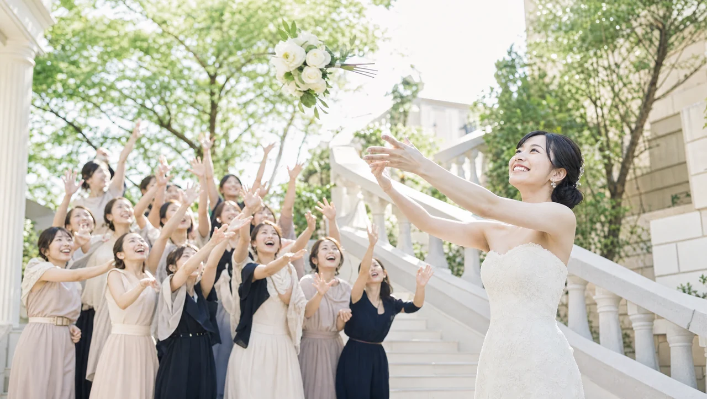
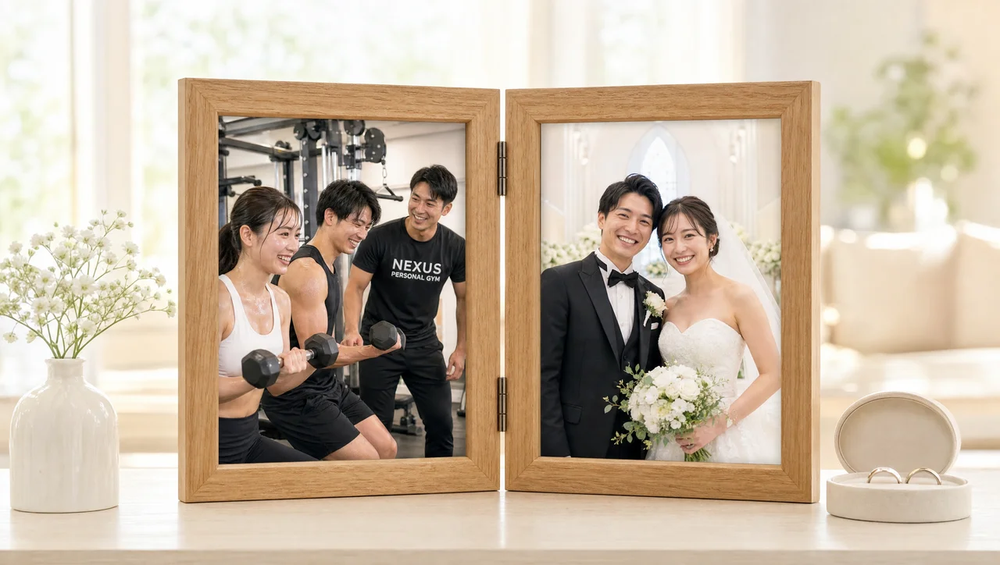

NEXUS Personal Gym ／ 東京都渋谷区
NEXUSパーソナルジム 渋谷・神泉店｜渋谷・神泉で、しなやかに絞る完全個室ジム
渋谷駅から徒歩10分・神泉駅からすぐ、道玄坂の喧騒から一本入った完全個室の隠れ家パーソナルジムです。自重中心のファンクショナルトレーニングで、筋肉をつけすぎずにしなやかなシルエットを目指します。「ムキムキになりたくない」という女性に選ばれる店舗。毎日8:00〜23:00・手ぶらOK・LINE予約だから、渋谷勤務の忙しい毎日でも続けやすい。
- ブライダル対応
- 完全個室
- ムキムキにならない
- 手ぶら通いOK
- 毎日8:00〜23:00
- LINEで簡単予約
この店舗の特徴
NEXUS渋谷・神泉店は、大型ジムがひしめく渋谷にありながら、道玄坂から一本入った神泉エリアに佇む完全個室のパーソナルジム。あえて喧騒から距離を置いた立地で、「人目を気にせず、しなやかに身体を絞りたい」という20〜30代の女性に選ばれています。得意とするのは、自重中心のファンクショナルトレーニング。重いウェイトでゴツく鍛えるのではなく、身体の使い方を整えながら、細く引き締まったシルエットへと導きます。ウェア・タオル・ドリンク・プロテインまで無料提供の手ぶら通いOK、予約はLINEでサッと完結。毎日8:00〜23:00営業で、渋谷での仕事帰りにも無理なく組み込めます。
ムキムキにならないトレーニング

「筋トレを始めたらゴツくなりそう」——これは女性が抱きがちな大きな誤解です。実際には、女性がホルモンの関係でボディビルダーのような身体になることはほぼありません。渋谷・神泉店では、重量を追い込む筋肥大メニューではなく、自重中心のファンクショナルトレーニングを軸にしています。自分の体重を使って身体の使い方を整えることで、筋肉をつけすぎずにスリムなシルエットを目指せる。会員からも「自重中心のトレーニングで、ムキムキにならずスリムなシルエットになれた」という声をいただいています。「細く引き締めたい、でもゴツくはなりたくない」という方にこそ向いた通い方です。
ムキムキになるのが嫌でパーソナルを避けていましたが、ここは自重中心でゴツくならないと聞いて入会。実際、筋肉で大きくなるのではなく、スッと細く引き締まってきました。理想のしなやかなシルエットに近づけています。
シルエットから変えるボディライン

目指すのは、体重計の数字ではなく「鏡に映るシルエット」の変化です。渋谷・神泉店では、ヒップアップや姿勢改善といった、見た目の印象を大きく左右する部位のトレーニングを重視。同じ体重でも、ボディラインが整うだけで細く見え、服のシルエットも変わります。自重ベースのファンクショナルな種目で、日常の動きにつながる「使える身体」をつくりながら、しなやかで引き締まった印象へと近づけていきます。極端な減量ではなく、続けられる範囲でシルエットを磨くアプローチです。
外食も間食もOKの食事指導
渋谷はおいしいお店が多く、付き合いの外食も避けられないエリア。だからこそ渋谷・神泉店では、「あれもこれも禁止」という食事指導はしません。会員からも「無理のない範囲の食事アドバイスで、外食も間食もしながらストレスなく続けられる」という声をいただいています。何をどう選べば良いかを一緒に考え、渋谷での外食も間食も楽しみながら、それでも変化を積み上げていく。ガマンで一時的に落とすのではなく、生活に無理なく溶け込む食べ方だから、リバウンドしにくく長く続きます。
食事も外食も我慢しなきゃいけないと思っていましたが、ここは無理のない範囲でアドバイスしてくれます。外食も間食もしながら続けられているのに、ちゃんと身体は変わってきていて、ストレスなく通えています。
手ぶらで渋谷帰りに

渋谷・神泉店は渋谷駅から徒歩10分・神泉駅からすぐ。ウェア・タオル・ドリンク・プロテインまで揃っているので、特別な準備はゼロ、仕事帰りにバッグひとつで立ち寄れます。予約はLINEで完結。トークから希望日時を送るだけなので、忙しい合間にもサッと予約・変更ができます。会員からも「LINEでサッと予約できて、手ぶらで寄れるので仕事帰りに続いている」という声。準備のハードルをとことん下げることが、渋谷勤務の忙しい毎日でも通い続けられる理由です。
道玄坂の喧騒から一本入った隠れ家
渋谷は大型ジムやフィットネスクラブがひしめくエリア。そのなかで渋谷・神泉店は、道玄坂の喧騒から一本入った神泉に、あえて完全個室・人目ゼロという逆張りのポジションを取っています。大勢の視線のなかで汗をかくのが苦手な方、すっぴんや部屋着感覚で気楽に通いたい方にとって、「誰にも見られない」環境は大きな安心材料。トレーニング中は担当トレーナーと二人だけの空間なので、フォームの細かい部分まで気兼ねなく質問できます。渋谷の便利さと、隠れ家の落ち着き。その両方を手に入れられるのが、この店舗の立地の強みです。
渋谷から徒歩10分で通いやすいのに、一歩入ると静かで落ち着いた雰囲気。完全個室なので人目を気にせず集中できます。LINEで予約が手軽なのも助かっていて、仕事帰りに無理なく続けられています。
まずは無料体験から
初回は60分程度の無料体験。カウンセリングで「どこを・どんなシルエットに変えたいか」をうかがい、姿勢チェックと実際のファンクショナルトレーニングまで体験できます。「ムキムキになりたくない」「細く引き締めたい」といった希望も、遠慮なくお伝えください。渋谷・神泉店なら、その目標に合わせて自重中心の無理のないプランを設計します。無理な勧誘は一切ありません。まずは話だけでも、気軽に来てください。予約はLINEからサッとどうぞ。
結婚式前のボディメイクを、渋谷・神泉で

「ドレスの試着で二の腕が気になった」「背中の開いたデザインを、体型を理由に諦めたくない」——挙式という動かせない期日があるからこそ、ボディメイクは最後までやり切れます。渋谷・神泉店では、まず挙式日とドレスのデザインをうかがい、背中・二の腕・デコルテ・ウエストという、ドレスでもっとも視線が集まる部位から優先順位をつけていきます。完全個室のマンツーマンだから、人目を気にせず自分の身体とだけ向き合えます。

残された日数によって、やるべきことは変わります。渋谷・神泉店では挙式日から逆算した90日プラン・60日プランを用意し、「いつまでに、どの部位を、どこまで」を最初に設計します。極端な食事制限で当日フラフラ……ということがないよう、その日のコンディションから逆算する無理のない指導で、式当日にピークを合わせます。会員の約85%が女性で、ブライダルのご相談は日常的。体に不必要に触れないノータッチ指導を基本にしているので、はじめての方も安心です。
週を追うごとに、ドレスの試着で鏡に映る自分が変わっていきます。背中がすっと伸び、二の腕のたるみが引き締まり、デコルテに華やかさが出る。「このデザインで大丈夫かな」から「このドレスを選んでよかった」へ——目標が数字ではなく“当日の自分の姿”だからこそ、モチベーションが途切れません。渋谷・神泉エリアで挙式を予定されている方は、エリア内の式場への下見や打ち合わせの動線に、そのままトレーニングを組み込めます。

迎えた挙式当日。積み重ねた90日・60日は、鏡の前の安心感になって返ってきます。姿勢よく背筋を伸ばして立ち、写真のどの角度でも堂々といられる——それは、頑張ってきた自分だけが手にできる自信です。渋谷・神泉店は、その一日のために全力で伴走します。

挙式は、新しい生活のスタートでもあります。せっかく作り上げた身体を、そのまま新生活の習慣に。渋谷・神泉店は毎日8:00〜23:00営業・月4回18,000円（1回4,500円〜）から続けられるので、挙式後の体型維持から、将来の産後の体型戻しまで長く伴走できます。全国約70店舗のネットワークがあるため、引っ越しや里帰りの際も最寄り店舗へ。「一生に一度」のために始めた習慣が、その後の人生を支える土台になります。
挙式まで残り80日で駆け込みました。背中の開いたドレスに合わせて、二の腕と背中を中心にプランを組んでもらい、当日は自信を持って写真に写れました。式後もそのまま通っています。
上記はサービス内容をわかりやすく伝えるためのモデルケース（イメージ）であり、実在するお客様の口コミではありません。Google口コミは本ページ内の該当セクションに実際の内容を要約して掲載しています。
挙式日からの逆算タイムライン｜ブライダル専用ページを見る料金プラン
入会金は通常55,000円、無料体験当日入会で15,000円（税込）に割引。全店舗共通の料金です。
アクセス
- 店舗名
- NEXUSパーソナルジム 渋谷・神泉店
- 住所
- 〒150-0043
東京都渋谷区道玄坂1-17-7 いちのビル 5階 - 最寄り駅
- 京王井の頭線 神泉駅すぐ／JR・東急・東京メトロ 渋谷駅 徒歩10分
- 営業時間
- 毎日 8:00〜23:00
- 電話番号
- 050-1790-8493
Googleマップの口コミ
出典：Google マップ
NEXUS渋谷・神泉店はGoogle口コミ★4.9・58件。筋肉をつけすぎずしなやかに絞る自重トレーニングと、手ぶらで通える手軽さが評価されています。
自重中心のトレーニングで、ムキムキにならずスリムなシルエットになれました。外食も間食もしながら続けられているのに、ちゃんと変化が出ていて驚いています。理想の身体に無理なく近づけています。
初めてのパーソナルで緊張しましたが、丁寧な説明と楽しい雰囲気であっという間でした。短期間でも2〜3kg減り、見た目もはっきり引き締まってきて、通うのが楽しみになっています。
渋谷から徒歩10分で通いやすく、LINEで予約が手軽なのが本当に助かります。手ぶらで寄れるので、仕事帰りにふらっと立ち寄れて続いています。完全個室で人目を気にせず集中できるのも良いです。
渋谷・神泉店のよくある質問
Q渋谷で女性向けの完全個室パーソナルジムはありますか？+
Q筋トレでゴツくなりたくないのですが大丈夫ですか？+
Q予約はどうやって取りますか？+
Q挙式まで3ヶ月ですが、結婚式に間に合いますか？+
Qドレスで気になる背中や二の腕を集中的に絞れますか？+
Q結婚式が終わった後も通い続けられますか？+
よくある質問（全店共通）
料金・制度などNEXUS全店に共通するご質問です。さらに詳しくは110問のFAQをご覧ください。
Q料金はいくらですか？+
Q手ぶらで通えますか？+
Qキャンセルはいつまでできますか？+
Q食事指導はありますか？+
Qトレーナーはどんな人ですか？+
Q女性会員は多いですか？+
Q体験の流れは？+
NEXUSパーソナルジムの特徴・料金をもっと見る